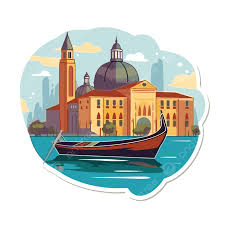

Sua próxima viagem:
|  |
Conheça Veneza |
Para os apaixonados:
Descubra 3 destinos imperdíveis em Veneza
Se você é apaixonado e busca um destino romântico e inesquecível, Veneza é o lugar ideal. Com seus canais encantadores, pontes históricas e paisagens de tirar o fôlego, a cidade convida casais a viverem momentos únicos. Prepare-se para embarcar em um roteiro cheio de charme e emoção!
1. Passeio de Gôndola pelo Grande Canal
Um clássico romântico! Deslizar pelas águas de Veneza em uma gôndola é uma experiência mágica. O passeio revela palácios históricos, pontes charmosas e a atmosfera única da cidade flutuante.
Bom para:
- Apaixonados
2. Ponte dos Suspiros (Ponte dei Sospiri)
A lenda diz que os casais que se beijam sob a Ponte dos Suspiros, ao pôr do sol, terão amor eterno. A ponte conecta o Palácio Ducal à antiga prisão e tem um charme melancólico, cheio de história e beleza.
Bom para:
- Apaixonados
3. Piazza San Marco à Noite
De dia, é o coração de Veneza; à noite, vira um palco romântico. A iluminação suave, os músicos tocando ao ar livre e o reflexo das luzes nos canais criam o cenário perfeito para um passeio de mãos dadas.
Bom para:
- Apaixonados
Veneza é o cenário perfeito para o amor: navegue de gôndola pelos canais, sinta a lenda da Ponte dos Suspiros e viva o encanto noturno da Piazza San Marco. Cada canto da cidade convida ao romance e à descoberta. Um destino inesquecível para corações apaixonados.